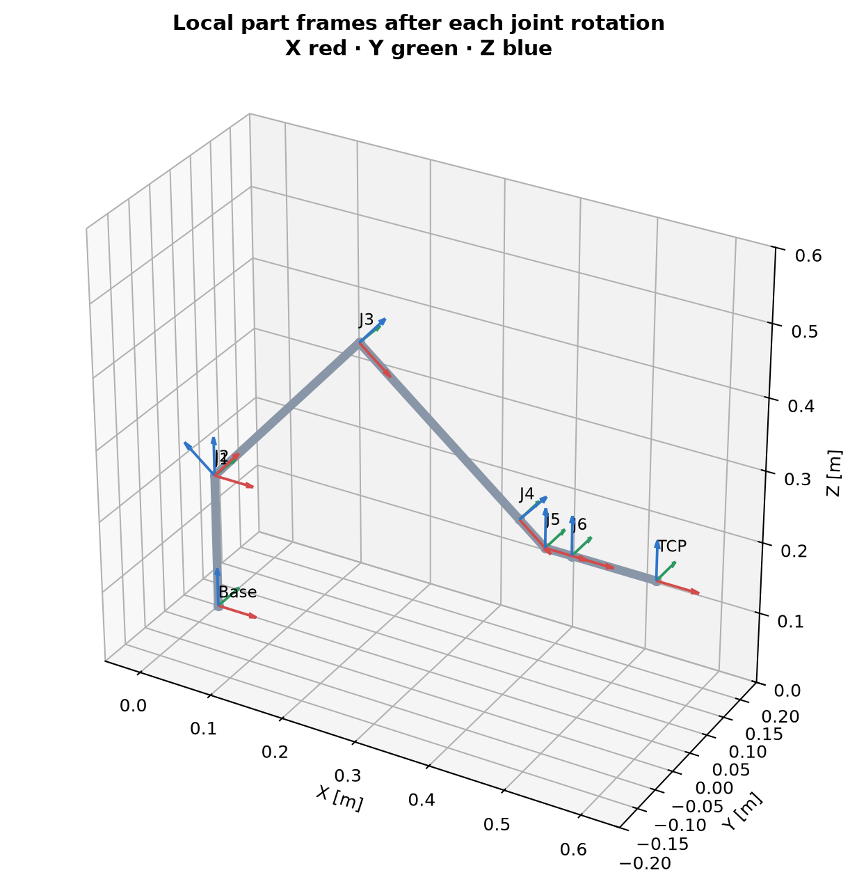
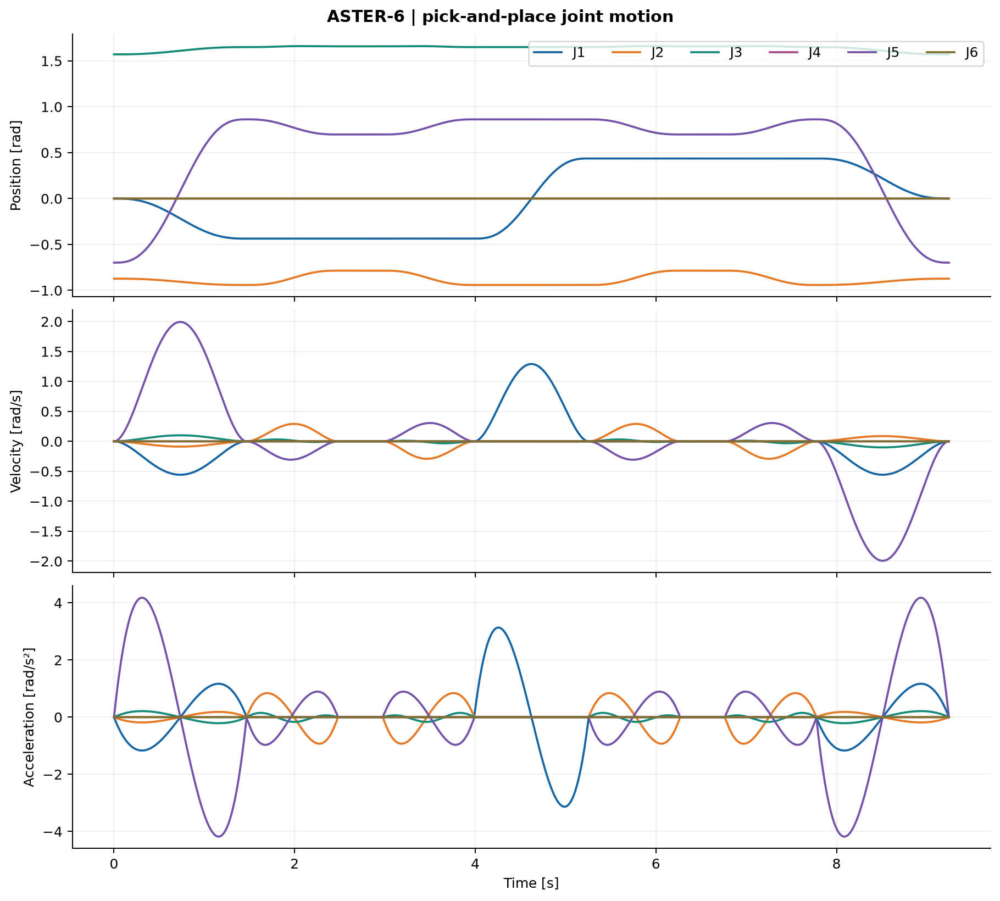

ASTER-6 / Reading room
How ASTER-6 works
Adapted for browser reading from the project’s illustrated documentation. Numeric results and engineering scope are unchanged. Reproduction notes are optional; the robot and board viewers run from the navigation above.
On this page
- How ASTER-6 works
- 1. Geometry gives the tool somewhere to go
- 2. Kinematics turns geometry into a tool pose
- 3. Give the tool a useful job
- 4. Check loads before choosing a drive
- 5. Make the gripper calculation match its mechanism
- 6. Test how a simplified joint follows commands
- 7. Connect the model to meaningful conceptual electronics
- Continue from the question that interests you
Documentation home · Project purpose · Full theory guide
ASTER-6 asks one connected question: can an original six-axis arm move a tool through a useful task, support an assumed load and follow commands in a defined digital model? Follow the same pick-and-place demonstration from geometry to evidence below. No physical robot was built.
Reading key: TARGET is a desired specification; ASSUMED is a model input; CALCULATED and SIMULATED are model outputs; VERIFIED DIGITALLY identifies an executed check. The 4 kg payload and ±0.1 mm repeatability remain targets.
1. Geometry gives the tool somewhere to go
Six revolute joints turn about local Z–Y–Y–X–Y–X axes. The shoulder and elbow position the wrist; the three wrist joints change tool orientation. The upper arm is 320 mm, the forearm 280 mm and the wrist/tool offsets total 190 mm. Their sum gives a 790 mm shoulder-centred radial reach bound. The shoulder is 190 mm above the base plane, giving a 980 mm TCP height in the straight-up pose. TCP means tool centre point.

Read the figure: each red/green/blue triad shows a local X/Y/Z frame after a joint rotation. These same frames place the CAD parts. It establishes the coordinate convention; it does not establish structural stiffness or collision clearance.
Geometry, limits and assumptions live in the central SI configuration. The CAD chapter, component catalog and drawings connect the dimensions to the modeled interfaces.
2. Kinematics turns geometry into a tool pose
Forward kinematics (FK) answers “where is the tool for these six angles?” A transform carries both position and orientation. Multiplying joint rotations and link translations follows the arm from base to tool:
T = Tz(h) Rz(q1) Ry(q2) Tx(L1) Ry(q3) Tx(L2)
Rx(q4) Tx(lr) Ry(q5) Tx(lp) Rx(q6) Tx(lt)
Tz/Tx are translations; Rx/Ry/Rz are rotations. Distances use metres and angles use radians internally. At zero angles, FK must return (0.790, 0, 0.190) metres with identity orientation: a useful hand check.
Inverse kinematics (IK) works backward from a requested tool pose. ASTER-6 uses bounded numerical least squares and deterministic restart seeds, then checks the returned pose. The retained 60 perturbed-seed trials have a maximum position residual of 2.70 × 10⁻¹¹ m. That checks numerical reconstruction; it is unrelated to physical repeatability. A failed local search does not prove that every branch is unreachable.
The Jacobian relates small joint motions to tool velocity: [linear velocity; angular velocity] = J(q) × joint velocity. Near a singular pose, some tool motions become difficult or impossible without large joint speeds. MOVE L therefore rejects sampled poses whose smallest scaled singular value is at or below 0.001; this is a numerical guard, not a safety threshold.

Read the plot: the points show where FK places the TCP for 6,000 seeded joint samples; colour indicates Jacobian conditioning. The envelope includes below-floor and self-colliding possibilities. Its convex hull fills holes and is not a certified reachable or safe volume.
Continue with frames, IK and Jacobian derivations, implementationSource file and numerical checks.
3. Give the tool a useful job
The task starts at home, approaches an object, descends, closes the gripper, lifts, transfers, lowers, releases and returns home. MOVE J interpolates joint angles for transfers. MOVE L follows an approximately straight tool path using successive IK solutions for approach and retreat.

Read the plot: vertical approaches appear where X/Y stay constant while Z changes; the transfer curves because it uses joint-space motion. Dwell intervals allow the scripted gripper events. This shows the requested geometric path, not contact or payload dynamics.

Read the plot: the derivatives show what each joint must do to follow that path. Quintic MOVE J segments have zero endpoint speed and acceleration. MOVE L derivatives use finite differences and time scaling; their limits are checked at samples. Continuous collision freedom and between-sample derivative bounds are not certified.
The simulated task takes 9.24398 s, records 1,041 samples and travels 1.32360 m. The largest speed and acceleration fractions are 95.17% and 99.80% of the assumed limits. The object attaches to the tool through an ideal kinematic constraint, rather than friction/contact physics.
See the recorded metrics and phase timings, plannerSource file, task sequenceSource file and FK animation. To operate the interactive CAD twin, follow the project launch instructions; GitHub displays its HTML source rather than running the viewer.

4. Check loads before choosing a drive
A long reach increases leverage. Using ASSUMED link masses and midpoint centres of mass, the 4 kg load at full extension gives 70.165 N·m shoulder and 31.880 N·m elbow static holding-torque magnitudes. The load model totals 23.65 kg; the separately calculated 19.908 kg CAD envelope sum uses simplified component interiors and overlaps, so the two quantities serve different purposes.

Read the plot: each added kilogram increases torque in proportion to its lever arm. It is a sensitivity study for the assumed mass/geometry model, not a measured payload rating.
The conceptual drive calculation adds diagonal inertia and damping allowances, then applies safety factor 2:
output torque = 2 × (gravity bound + sizing inertia × acceleration limit
+ damping × velocity limit)
motor torque = output torque / (gear ratio × assumed efficiency)
The shoulder result is 165.425 N·m output, or 1.969 N·m motor torque with a 120:1 ratio and 0.70 efficiency. Sizing inertia uses the larger of the educational plant inertia and the corresponding point-mass inertia bound. Coupled dynamics, reflected drive inertia and continuous-duty heating remain outside this calculation.
An ideal beam model estimates 0.10408 mm serial TCP deflection. Holes, contacts, bearings and gearbox compliance are omitted; this does not establish full assembly stiffness or ±0.1 mm repeatability. Follow the mechanical chapter, torque sourceSource file, beam sourceSource file and load results.
5. Make the gripper calculation match its mechanism
An opposed-hand lead screw moves two guided jaws symmetrically. A 90 mm opening requires 45 mm travel per jaw. Each nut travels 4 mm per revolution, so the full gap changes by 8 mm and the full stroke needs 11.25 revolutions.
For the 200 N total normal-force target (100 N per jaw), work balance gives torque = total normal force × lead / (2π × efficiency). At assumed efficiency 0.35, the required screw torque is 0.363783 N·m. With assumed friction coefficient 0.5 and safety factor 2, the ideal static friction-only capacity is 5.099 kg. It is not a physical load rating; acceleration, guide friction and object contact are omitted.
Explore the gripper render, mechanism and finger-stiffness discussion, gripper codeSource file and finger-length study. Screw threads and preload remain conceptual in the CAD.


6. Test how a simplified joint follows commands
The planner supplies desired angles. A PID controller uses position error, accumulated error and velocity error to command torque. Torque saturation and conditional integration limit the command and reduce integrator windup. Each virtual joint follows I × acceleration + b × velocity = commanded torque.

Read the plot: dashed and solid curves compare desired and simulated angles; the middle panel exposes tracking error, and the bottom panel shows the torque command. The overall task tracking RMSE is 0.006383 rad across all joint samples. It is an aggregate angular metric, not TCP accuracy. Gravity, coupling, backlash, noise and drive delay are absent from these independent-axis plants.
Read the architecture, PID sourceSource file, step response, control metrics and gain-sensitivity study.


7. Connect the model to meaningful conceptual electronics
The KiCad design covers a low-voltage joint/sensor interface: an external 3.3 V controller, encoder and limit inputs, external-drive commands, regulated power and RS-485 communication. It is a concrete subsection of the proposed controller architecture; the Python simulation does not run through the PCB.

Read the image: connector placement, power distribution and routing are inspectable against the schematic and manufacturing exports. The board has 48 footprints and four copper layers. Retained native checks report zero ERC violations and zero DRC errors, warnings or unconnected items under the documented enabled rules. These checks do not establish EMC, thermal, functional-safety or hardware performance.
Follow the electronics chapter, component/BOM guide, schematic PDF, PCB layers PDF and native check evidence.
Continue from the question that interests you
| Question | Next stop |
|---|---|
| How are the equations derived? | Full theory guide and kinematics |
| Why these engineering choices? | Requirements, decisions and journal |
| What changed when parameters varied? | Five actual research sweeps and their interpretation |
| What was actually checked? | Validation matrix, executed reportSource file and scope audit |
| How do I reproduce the demonstration? | Setup and run commands, then CAD reproduction for native outputs |